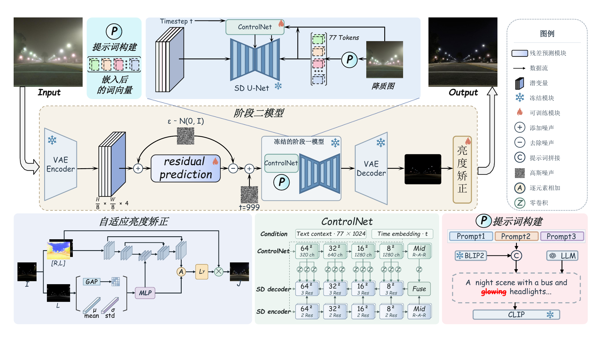
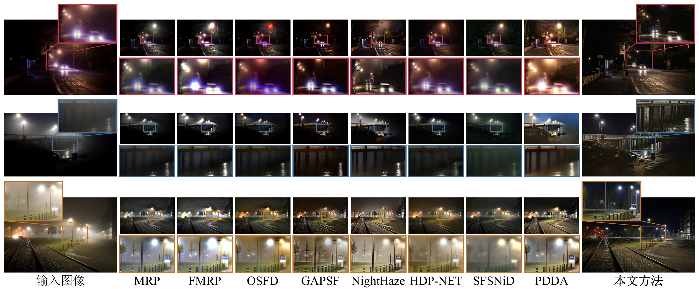

摘要
整体架构

视觉对比
RealNightHaze
定量比较
↑ 越大越好，↓ 越小越好。粗体和下划线分别标记最优和次优。
| BRISQUE ↓ | TOPIQ-NR ↑ | MANIQA ↑ | CLIPIQA ↑ | DBCNN ↑ | HyperIQA ↑ | Q-Align ↑ | QualiCLIP+ ↑ |
|---|

BibTeX

RealNightHaze
↑ 越大越好，↓ 越小越好。粗体和下划线分别标记最优和次优。
| BRISQUE ↓ | TOPIQ-NR ↑ | MANIQA ↑ | CLIPIQA ↑ | DBCNN ↑ | HyperIQA ↑ | Q-Align ↑ | QualiCLIP+ ↑ |
|---|
